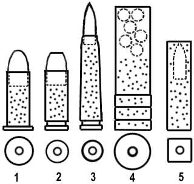

Here are the main types of powder ammo used inthe Cyberpunk 2020 world. These devices are based on a principle known since more than a century : propel a heavy projectile (made of lead, or more rarely of Uranium for heavy weapons, sometimes jacketed with a more rigid metal, like brass, copper or steel, and maybe a lubricating coating like teflon to reduce barrel friction) with the the expanding gases producedby a fast-burning propellant. The propellant itself is ignited by a percussion cap, at the rear of the cartridge.

1) Revolver cartridge. It has a rimmed base, which allows the bullet to be clamped in the cylinder, and it's straight. The case istraditionaly made of brass or plastic (more common in 2020)
2) Pistol cartridge, with a groove instead of a rim, allowing easier packing of the rounds in the magazine. The material isthe same as in a revolver cartridge. These ammo are also used in carbinesor older rifle design.
3) Assault rifle or hunting rifle cartridge, longer than a hand weapon or a carbine round and generally bottle-necked for largerpowder capacity and increased power. The material used for the case isidentical to the previous one.
The projectile is more aerodynamic than a handgun's one,because it is meant to be fire at high velocity and longer range.
4) Hunting shot cartridge. There are several projectiles, spreading out to create a cone of fire. The case is generally made of plastic,and a cap prevent the content from falling. These cartridges are used in hunting rifles, riot guns (automatic shot rifles) and shotguns with a pump action. Those weapons have no rifling in their barrel.
5) Caseless cartridge. Here, the powder is the casing of the projectile. A varnishing protects it from moisture and moderate schocks. There is few matter left after the powder has exploded. The cross-section is generally square for a thighter packing in the magazine, but there are some exceptions.
Caseless ammo can be used in handguns or rifle as well.The advantage of the caseless ammo lies essentially in its small weigthand optimized volume. It is more sensitive than a cased ammo to moisture and shocks, and can't be easily adapted for use in a revolver (the chambers of the cylinder are bored from side to side and it's the case that holdsthe round in place and close the back).